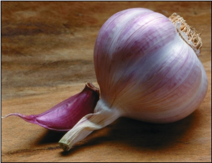
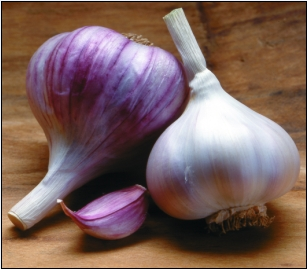
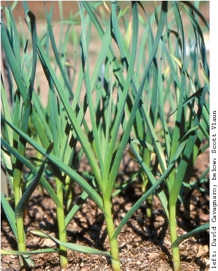
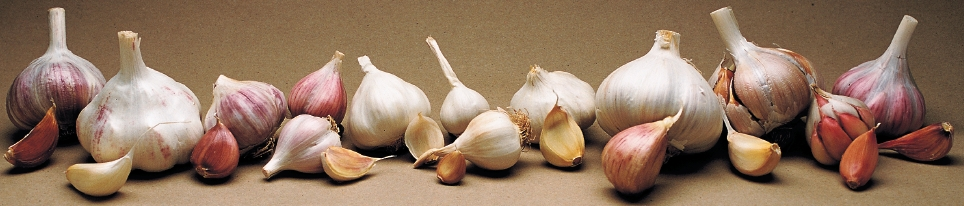
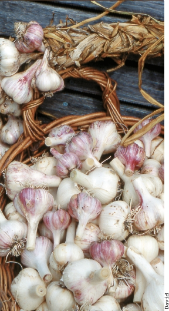

Garlic tastes wonderful, whether you mince it for salsa, pure it for pesto, bake whole bulbs until the flesh is soft enough to spread on bread, or steam a few cloves in the same pot with potatoes.
The perfect time to plant this crop A(llium sati)vuims late fall, a fitting last hurrah for the gardening year. Garlic does best in soil rich in organic matter; it also needs full sun and regular watering during the spring -sea son. In the summer, when half of its leaves turn brown, you can pull up the bulbs and treat yourself to the besttasting garlic you ve ever eaten, with a crisp texture unique to fresh, homegrown garlic.
There are two main garlic types: softnecks, such as artichoke, Creole, Asiatic and turban varieties; and more cold-hardy hardnecks, represented by porcelain, purple stripes and rocambole types. (See The Language of Garlic, Page 74, for the characteristics of each type, including the climates in which they grow best and how well they keep through the winter.) Climate plays an important role in the survival quality of garlic, which a-lso is a prisingly responsive crop. If you save and replant the best cloves from your garden-grown garlic, it will show its satisfaction with the particular growing conditions in your garden by improving in quality with each passing season.
Where should you start and what should you expect? The garlic grower s art varies from one climate to another, but these six organic growers offer expert advice for every region.
Since 1977, Filaree Farm in north-central Washington has been a pioneer in collecting, growing and selling little-known strains of gourmet garlic. All hundr-ed-plus va rieties grown at Filaree Farm are planted at the end of September, in soil that has been kept in alfalfa and other cover crops for seven years between garlic plantings.
For Northwest gardeners-, own er Watershine Woods recommends turban varieties such as Portuguese because they come in early, and marbled purple stripes because they are big plants with beautiful bulbs that have big cloves.
It's best to start with a small plot, Woods says, so you can make your mistakes on a small scale. It s also important to handle the bulbs carefully when you harvest them. Her advice is to treat the bulbs like cracked eggs.
Woods says she likes to steam garlic by adding peeled cloves to potatoes or rice during the last 3 minutes of cooking time. - It will soft en and you can eat it whole or mash it up, she says. Sh-e also en joys making her own garlic powder.
Minnesotan Joel Girardin grows more than 150 varieties in four row beds, in which he rotates garlic with heirloom tomatoes, squash and melons. Twelve years ago, Girardin became interested in growing garlic after trying strains grown by Seed Savers Exchange members. He found little information on how it was done in Minnesota, so he started experimenting. He says hardnecks porcelain types such as Georgian Crystal and Music, as well as various purple stripes perform best in his area. Before planting garlic in early October, Girardin fertilizes his beds with organic fertilizer made from poultry manure.
For big bulbs, he spaces cloves 6 inches apart. He also plants whole bulbs, which grow into two delicious spring crops greens and scallions.
When the tops are 4 inches to 6 inches tall, they can be cut off and used in salads, like garlic chives, he says. When the tops grow back to 12 inches tall, we dig the whole bulb, break it apart and have garlic scallions, which are lik-e onion scal lions, with a white bulb and green top, and a nice garlic taste.
He and his wife also love baked garlic, made by lopping off the tops from -several ma ture bulbs (so the tips of the cloves are exposed), drizzling them with olive oil and then roastin-g them un til soft. Girardin mixes the roasted garlic warm from the oven -with a lit tle mayonnaise and spreads it on toast.
James Gunderson has been growing garlic for five years in Littleton, N.H. He says it took three years to develop strains that do well in his area s cold clay and to improve his soil with green manure crops.
You really need a lo-t of or ganic matter in the soil, because garlic needs room to breathe, he says. At G & H Garlic Farm, Gunderson rotates three years of cover crops with each c-rop of gar lic. Garlic s need for great soil a good thing to learn when you have only 1 or 2 pounds in the ground, but even while you- re learn ing, garlic is an enjoyable crop to grow because while it s in the ground, you don t have to attend to it as much as other garden crops.
Gunderson plants his garlic in early October and covers it with 6 to 8 inches of wheat straw. The straw is essential to keep the frost from pushing the bulbs out of the ground, he says. Gunderson recommends hardneck Spanish Roja rocambole and softneck Asian Tempest Asiatic, as well as Georgian Crys-tal porce lain for sausage making to growers in his region.
All garlic grown in cold climates is likely to be quite spicy, Gunderson says, because the colder the winter, the spicier the garlic. The hardneck types that grow well in New Hampshire don t store well, so Gunderson s wife, Kim, who is Korean by birth, has refin-ed a pro cedure for pickling raw garlic in soy sauce, which Gunderson says he can eat by the bowlful. (Go to www.gourmetgarlicgardens.com/pickle.html find pickled garlic recipes.)
Bob Zimmerman and Wendy Douglas wait for October s full moon to plant their garlic at Bobba-Mike s in Orrville, Ohio. They na-me sever al hardnecks as regional standouts: Music porcelain because it is so cold hardy; Romanian Red - porce lain for its incredible pungent flavor; and Chesnok Red purple stripe for roasting or adding to pasta dishes. Zimmerman also recommends Georgian Fire porcelain -as an ex cellent choice for salsas and other Mexican dishes.
Zimmerman says to make sure you have a soil test done -and ap propriately amend the soil. Garlic likes a pH (acidity level) of 6.5 to 7, and the soil should be ri-ch in or ganic matter. We use composted leaves and chicken manure, he says. Zimmerman and Douglas plant their garlic 3 inches deep in rows 5 inches apart. After the garlic is harvested in midsummer, a quick crop of buckwheat is sown in its place.
They say it s hard to go wrong if you start with a locally -adapted va riety and begin with a sm-all planti ng: Growing garlic is easy, and we think every backyard gardener should give it a try. Zimmerman and Douglas say they love to eat it with fresh homegrown tomatoes, basil, olive oil and a little salt black pepper.
SOUTHEAST:
CORNERSTONE GARLIC FARM
Natalie Foster says sof-tneck arti choke garlics, planted from mid- October to mid-November, are the best varieties at Cornerstone, in North Carolina s wacky winter and spring conditions. Both Inchelium Red and Lorz Italian prosper in changeable weather, store for months and are great for braiding. Although Music porcelain often doesn t get very big, Foster says the easy-to-peel cloves are packed with big flavor, and you- get won derful scapes to eat in the spring. She loves eating the scapes either raw, baked or roasted.
In search of more good scape producers for her climate, Foster says she is encouraged by- the per formance of various Asiat-ics and tur bans, which she has been growing for the past two years. She mulches her garlic with chopped leaves, mostly for weed suppression, but in her humid climate, harvesting garlic at the right time is the -biggest chal lenge. Harvest garlic when the leaves are no more than 40 percent to 50 percent brown, and try to get it when the soil is dry, she says. Because curing garlic is difficult in humid conditions, Foster closely trims the roots and shakes off dirt from freshly dug garlic, but never washes it. We also have found that garlic cures best when the stalks are cut back to 2 to 4 inches, especially with hardnecks. Foster also highly recommends mild-tasting elephant garliAc. (ampelopras)u,m which is really a leek, because it s such a prolific grower, producin-g 4-inch-di ameter bulbs that often weigh 8 ounces or more. I stuff my Thanksgiving turkey with elephant garlic, and my guests don t know I used garlic. They just know my turkey is great, she says.
Bob Anderson began growing garlic in Bangs, Texas, in 1993, after his wife, Merridee McClatchy, bought him a copy of Ron Engeland’s Growing Great Garlic. Since then, he’s found that the best garlics for his area include ‘Burgundy’ and other Creoles; marbled purple stripes such as ‘Metechi’ and ‘Siberian;’ and ‘Red Toch’ artichoke?-?all varieties with good tolerance of Texas’ intense sun.
“The worst problem we can have is an early heat spell,” Anderson says. “Not every garlic reacts the same way to adverse circumstances. In any given year, some will flourish and others won’t do as well. Then, the next year, they will change places.” In years when grasshoppers are especially bad, Anderson has found that covers made from aluminum window screening are the only thing that will slow the ’hoppers down.
To prevent fungal diseases, Anderson always follows garlic with brassicas. From there, he rotates to legumes and then to either nightshades or okra. “Garlic evolved in some pretty sparse turf, but it still needs good soil balance, with good mineral content,” he says. No matter where you live, or what kind of garlic you grow, Anderson says freshly harvested homegrown garlic is crisp, juicy and delicious.?
|
 Plant garlic cloves this fall and your look like this next summer. |
 |
 |
|
 |
 |
|